Before You Start
This PDF is an unofficial beginner guide for TaCZ, also known as Timeless and Classics Guns: Zero. It explains the basic controls and the first gameplay loop so you can quickly start recording or playing with guns in Minecraft Java Edition.
This product does not include the TaCZ mod file. Download the mod only from its official distribution page, such as CurseForge or the project page linked by the author. Do not redistribute mod jar files inside your own paid product.
Tested notes are based on tacz-1.20.1-1.1.8-release.jar. Keybinds and menu names may change if you use a different Minecraft, Forge, or TaCZ version.
1. What TaCZ Adds
TaCZ is a modern gun mod for Minecraft. It adds firearms, ammunition, attachments, gun crafting, and customization systems. The default content pack includes many weapon types, from pistols and rifles to sniper rifles and heavy weapons.
| Content Type |
Beginner Meaning |
| Guns |
Weapons such as pistols, assault rifles, shotguns, machine guns, and sniper rifles. |
| Ammunition |
Each gun needs compatible ammo. If the ammo type is wrong, reloading will fail. |
| Attachments |
Scopes, sights, muzzles, grips, stocks, lasers, extended magazines, and ammo mods. |
| Gunsmith Table |
The main workbench used to craft guns, ammo, and attachments. |
2. Requirements and Setup Notes
Use the Minecraft version and mod loader version that match the TaCZ release you downloaded. For the local analyzed file, the jar name indicates Minecraft 1.20.1.
| Item |
What to Check |
| Minecraft Java Edition |
TaCZ is for Java Edition modded Minecraft, not Bedrock Edition. |
| Mod Loader |
Install the loader required by the TaCZ download page for your version. Match the loader and Minecraft version carefully. |
| TaCZ jar |
Place the downloaded TaCZ jar in your Minecraft mods folder. |
| Cloth Config API |
Needed for the in-game configuration screen opened with Alt + T. Gameplay may work without the config screen, but the settings menu depends on it. |
If Minecraft crashes on startup, re-check the Minecraft version, mod loader version, and dependency list on the official TaCZ page. Version mismatch is the most common modding problem.
3. Default Controls
TaCZ changes how right click behaves while you are holding a gun. In normal Minecraft, right click opens blocks and interacts with entities. In TaCZ, right click is usually used for aiming down sights, so TaCZ adds a separate interaction key.
| Input |
Action |
How to Use It |
| Left Click |
Fire |
Hold a loaded gun and left click to shoot. |
| Right Click |
Aim / ADS |
Hold right click to aim down sights. This is important for sniper rifles and scoped weapons. |
R |
Reload |
Reload the gun if compatible ammo is in your inventory. |
G |
Switch Fire Mode |
Cycle modes such as semi-auto, burst, or full-auto when the weapon supports them. |
H |
Inspect Weapon |
Plays an inspection animation. Useful for videos and for visually checking the weapon. |
Z |
Customize |
Open the attachment/customization screen while holding a gun. |
O |
Interact |
Open chests, doors, workbenches, and entities while still holding a gun. |
V |
Melee / Scope Zoom |
Without ADS, it works as melee. While aiming with a scope, it changes zoom. |
C |
Crawl |
Default setting is hold-to-crawl. |
Alt + T |
TaCZ Settings |
Open the TaCZ client configuration screen when Cloth Config API is installed. |

Suggested OBS input overlay layout for TaCZ videos. H and O are included because they are important TaCZ-specific keys.
4. First 10-Minute Gameplay Loop
If you are completely new, follow this simple loop before trying advanced attachments.
- Install TaCZ and launch Minecraft with the correct mod loader.
- Create or obtain a Gunsmith Table.
- Use the Gunsmith Table to craft one gun and the matching ammunition.
- Put the gun and ammo in your inventory.
- Hold the gun and press
R to reload.
- Hold right click to aim.
- Left click to fire.
- Press
G to test fire mode switching if the weapon supports multiple modes.
- Press
Z to open customization and check attachment slots.
- Use
O when you want to open a chest, door, table, or entity while holding the gun.
For beginner videos, show this loop slowly once. Viewers understand the mod faster when they can see reload, aim, shoot, fire-mode switching, and customization in one short sequence.
5. Gunsmith Table
The Gunsmith Table is the core crafting station for TaCZ. It is used for guns, ammo, and attachments.
Crafting Shape
Local analysis notes show this pattern:
LLL
IBI
I I
| Symbol |
Material |
L |
Log-tag block |
I |
Iron ingot |
B |
Iron block |
After placing the table, interact with it to browse available gun, ammo, and attachment recipes from the installed content pack.
6. Aiming, Firing, and Reloading
Aiming
Right click is the default aim key. The default behavior is hold-to-aim, which means you aim only while right click is held.
For scoped weapons, aim first, then use V if the scope supports zoom switching.
Firing
Left click fires the gun. If nothing happens, check ammo, reload state, and whether the weapon is actually selected in your hotbar.
Reloading
Press R to reload. TaCZ does not automatically reload by default. You need compatible ammo in your inventory. Wrong ammo type is the most common reason reloading fails.
| Problem |
Likely Cause |
Quick Fix |
| Gun does not fire |
Not loaded, no ammo, or wrong ammo |
Craft compatible ammo and press R. |
| Reload does nothing |
Ammo type does not match the gun |
Check the gun recipe and ammo category in the Gunsmith Table. |
| Fire mode will not change |
Weapon has only one fire mode |
Try a rifle or other weapon that supports multiple modes. |
7. Customization and Attachments
Hold a gun and press Z to open the customization screen. Attachments change weapon behavior and are also useful for making videos visually clearer.
| Attachment Type |
What It Usually Does |
Beginner Tip |
| Scope / Sight |
Changes aiming view and zoom options. |
Use scopes for sniper footage and dot sights for quick aiming. |
| Muzzle |
Can change sound, recoil feel, or weapon handling depending on the item. |
Try suppressors and muzzle brakes in separate comparison clips. |
| Grip |
Usually affects handling and stability. |
Good for assault rifles and automatic weapons. |
| Stock |
Usually affects stability or handling. |
Check the customization screen stats before and after changing it. |
| Laser |
Helps with visual aiming or tactical presentation. |
Useful for short-form videos because viewers immediately understand aiming direction. |
| Extended Magazine |
Increases capacity for supported weapons. |
Helpful for full-auto demonstrations. |
| Ammo Mod |
Changes ammunition behavior for supported weapons. |
Use one clear test target when showing differences. |
Not every gun accepts every attachment. The compatible slots depend on the gun definition and the installed content pack.
8. Gun and Attachment Compatibility Table
This appendix is generated from the analyzed default TaCZ content pack. It shows which attachment categories are available for each gun. The English labels are paired with internal IDs so you can search and identify items accurately in the Gunsmith Table.
If you install another gun pack or edit the default pack, compatibility can change. Use this as a guide for the analyzed default TaCZ pack.
Other
M249 Light Machine Gun tacz:m249
| Compatible Attachments | None |
|---|
RPK tacz:rpk
| Compatible Attachments | None |
|---|
M134 Minigun tacz:minigun
| Compatible Attachments | None |
|---|
FN EVOLYS Light Machine Gun tacz:fn_evolys
| Compatible Attachments | None |
|---|
Other
Glock 17 tacz:glock_17
| Compatible Attachments | None |
|---|
Deagle 50 tacz:deagle
| Compatible Attachments | None |
|---|
CZ 75 tacz:cz75
| Compatible Attachments | None |
|---|
Golden Deagle .357 tacz:deagle_golden
| Compatible Attachments | None |
|---|
P320 tacz:p320
| Compatible Attachments | None |
|---|
M1911 tacz:m1911
| Compatible Attachments | None |
|---|
B93R tacz:b93r
| Compatible Attachments | None |
|---|
Timeless .50 Z-Type tacz:timeless50
| Compatible Attachments | None |
|---|
.22 Model 943 tacz:taurus943
| Compatible Attachments | None |
|---|
.357 Rhino tacz:rhino357
| Compatible Attachments | None |
|---|
.30-06 Lonetrail tacz:lonetrail
| Compatible Attachments | None |
|---|
MK23 SOCOM tacz:hk_mk23
| Compatible Attachments | None |
|---|
Taurus Raging Hunter tacz:taurus500
| Compatible Attachments | None |
|---|
M9A4 tacz:m9a4
| Compatible Attachments | None |
|---|
Other
AK47 tacz:ak47
| Compatible Attachments | None |
|---|
M4A1 Carbine tacz:m4a1
| Compatible Attachments | None |
|---|
HK G3 Battle Rifle tacz:hk_g3
| Compatible Attachments | None |
|---|
SKS Tactical Rifle tacz:sks_tactical
| Compatible Attachments | None |
|---|
SCAR-H Battle Rifle tacz:scar_h
| Compatible Attachments | None |
|---|
SCAR-L Assault Rifle tacz:scar_l
| Compatible Attachments | None |
|---|
M16A1 Service Rifle tacz:m16a1
| Compatible Attachments | None |
|---|
M16A4 Service Rifle tacz:m16a4
| Compatible Attachments | None |
|---|
HK416A5 tacz:hk416d
| Compatible Attachments | None |
|---|
AUG tacz:aug
| Compatible Attachments | None |
|---|
Mk14 EBR tacz:mk14
| Compatible Attachments | None |
|---|
Type 81-1 Automatic Rifle tacz:type_81
| Compatible Attachments | None |
|---|
Type 95 Automatic Rifle - Longbow tacz:qbz_95
| Compatible Attachments | None |
|---|
G36K tacz:g36k
| Compatible Attachments | None |
|---|
SPR-15 HB Sagittarius tacz:spr15hb
| Compatible Attachments | None |
|---|
Type 191 Automatic Rifle tacz:qbz_191
| Compatible Attachments | None |
|---|
FN FAL Battle Rifle tacz:fn_fal
| Compatible Attachments | None |
|---|
Other
M320 Grenade Launcher tacz:m320
| Compatible Attachments | None |
|---|
RPG-7 tacz:rpg7
| Compatible Attachments | None |
|---|
Other
M870 tacz:m870
| Compatible Attachments | None |
|---|
AA-12 Shotgun tacz:aa12
| Compatible Attachments | None |
|---|
SPAS-12 Special Shotgun tacz:spas_12
| Compatible Attachments | None |
|---|
M1014 Battle Shotgun tacz:m1014
| Compatible Attachments | None |
|---|
DB-4 Ursus tacz:db_long
| Compatible Attachments | None |
|---|
DB-2 Durin tacz:db_short
| Compatible Attachments | None |
|---|
Other
HK-MP5A5 tacz:hk_mp5a5
| Compatible Attachments | None |
|---|
UZI tacz:uzi
| Compatible Attachments | None |
|---|
Vector tacz:vector45
| Compatible Attachments | None |
|---|
UMP-45 Submachine Gun tacz:ump45
| Compatible Attachments | None |
|---|
P90 PDW tacz:p90
| Compatible Attachments | None |
|---|
Other
Accuracy International AWM tacz:ai_awp
| Compatible Attachments | None |
|---|
M95 .50 Anti-Materiel Rifle tacz:m95
| Compatible Attachments | None |
|---|
M700 Sniper Rifle tacz:m700
| Compatible Attachments | None |
|---|
M107 Sniper Rifle tacz:m107
| Compatible Attachments | None |
|---|
Springfield 1873 Trapdoor Rifle tacz:springfield1873
| Compatible Attachments | None |
|---|
Mauser Kar98k tacz:kar98
| Compatible Attachments | None |
|---|
9. Interacting While Holding a Gun
The O key is easy to miss, but it is one of the most important TaCZ controls. Because right click is used for aiming, normal Minecraft interaction can become difficult while holding a gun.
Use O when you want to interact with:
- Chests
- Doors
- Crafting tables and other workstations
- The Gunsmith Table
- Entities such as villagers, boats, or rideable entities
In tutorial videos, show O once with a chest or Gunsmith Table. Many beginners assume their game is broken when right click keeps aiming instead of opening blocks.
10. AWM and Sniper Workflow
For AWM-style sniper gameplay, the goal is to show a clear sequence: weapon ready, aim, zoom, fire, reload, and inspect. The exact attachments available depend on the weapon and content pack, but the workflow stays similar.
- Equip the sniper rifle and compatible ammo.
- Press
R to reload before the action moment.
- Hold right click to aim down sights.
- If a scope supports it, press
V while aiming to change zoom.
- Left click to fire.
- Press
H after the shot for a clean inspection moment.
- Press
Z to show the scope or attachment setup if you are making a tutorial.
Shorts Recording Checklist
- Show the keyboard and mouse overlay before the first shot.
- Keep the crosshair and target visible.
- Use one clear action per clip: reload, aim, shoot, inspect, customize.
- Use English on-screen words for global viewers: Reload, Aim, Fire, Inspect, Customize.
11. Recording Overlay Setup
For OBS Studio, use an input overlay that shows the keys a viewer needs to copy. For TaCZ, the important keys are not only WASD and mouse buttons. You also want R, G, Z, H, O, V, and C.
| Overlay Element |
Reason |
| Mouse left button |
Shows firing clearly. |
| Mouse right button |
Shows aiming / ADS clearly. |
R, G, Z |
Reload, fire mode, customization. |
H, O |
Inspect and interact. These are TaCZ-specific and helpful for tutorials. |
V, C |
Scope zoom / melee and crawl. |
Recommended simple overlay style for TaCZ tutorial recording.
12. Troubleshooting
| Symptom |
Check This First |
Fix |
| Minecraft crashes on startup |
Wrong Minecraft version, wrong mod loader, or missing dependency |
Return to the official TaCZ download page and match every required version. |
| Gun does not shoot |
Reload state and ammo type |
Put compatible ammo in inventory and press R. |
| Reload key does nothing |
Ammo is missing or incompatible |
Craft the correct ammo from the Gunsmith Table. |
| Cannot open chests while holding a gun |
Right click is being used for ADS |
Use O instead of right click. |
| Zoom does not change |
No compatible scope or not aiming |
Attach a compatible scope, hold right click, then press V. |
Alt + T settings do not open |
Cloth Config API may be missing |
Install the required config library for your Minecraft version. |
| Crawl does not work |
Gun or server may not support crawl behavior |
Check TaCZ settings and server configuration. |
| Keys conflict with another mod |
Shared keys such as R, G, Z, V, C, or H |
Open Minecraft controls and move one of the conflicting keybinds. |
13. One-Page Cheat Sheet
| Goal |
Input |
Remember |
| Fire |
Left Click |
Needs loaded compatible ammo. |
| Aim |
Right Click |
Hold by default. |
| Reload |
R |
Auto reload is off by default. |
| Switch fire mode |
G |
Only works when the weapon supports multiple modes. |
| Inspect |
H |
Great for video transitions. |
| Customize |
Z |
Use it to attach scopes and other parts. |
| Interact |
O |
Use this for chests, doors, workbenches, and entities while holding a gun. |
| Melee / Zoom |
V |
Zoom only while aiming with a compatible scope. |
| Crawl |
C |
Hold by default. |
| Settings |
Alt + T |
Requires Cloth Config API for the config screen. |
Best Beginner Practice Sequence
- Craft Gunsmith Table.
- Craft gun and compatible ammo.
- Press
R to reload.
- Hold right click to aim.
- Left click to fire.
- Press
Z to customize.
- Use
O for normal Minecraft interaction while holding the gun.